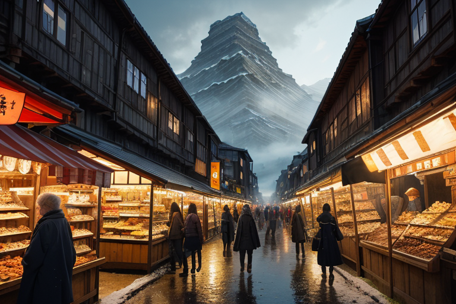
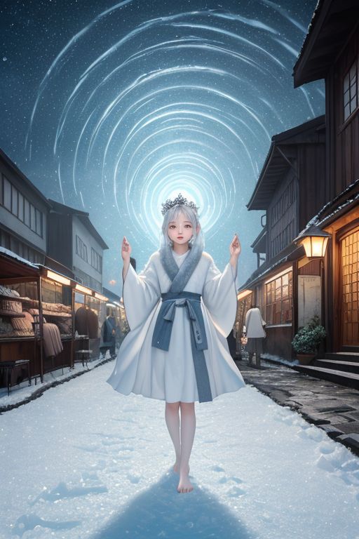
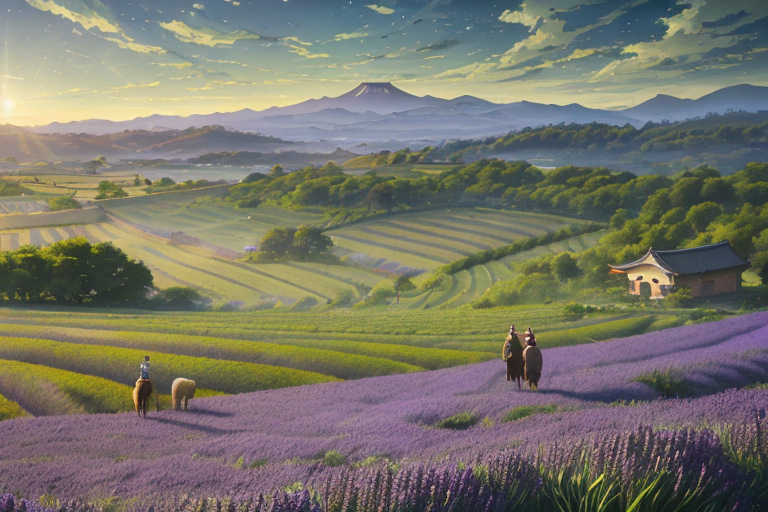
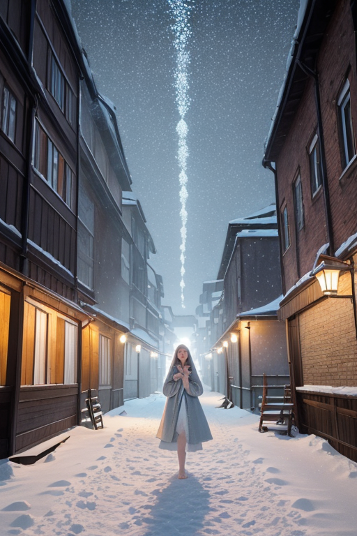
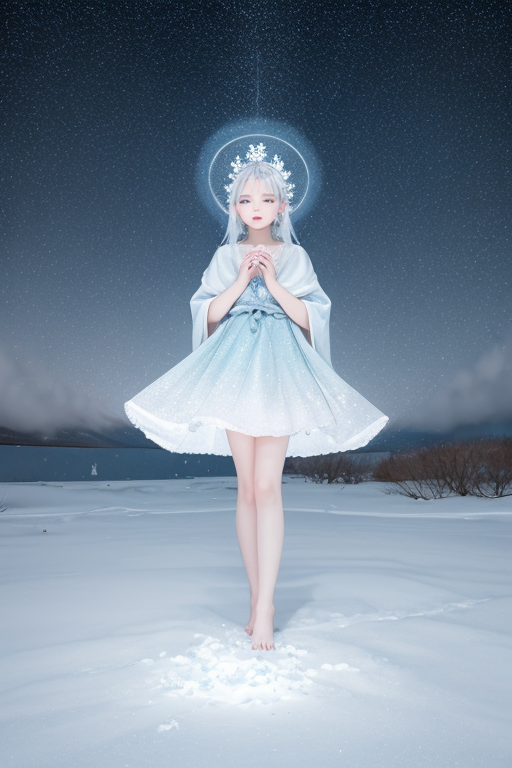

第一章 現実の北海道
あなたはまだ気づいていない。この土地にも、王がいることを。
小樽運河の倉庫群は、かつてニシンの群れがもたらした富を石造りに閉じ込めたまま、観光客のざわめきに浸っている。硝子の器が陽光を切り取り、甘い菓子の香りが冷たい空気を濁す。人の流れは金の流れであり、欲望と活気がこの港町の表面を覆う。しかし、その奥底では、かつて海が運んだ膨大な生命の残滓が、ゆっくりと地層を歪め続けている。プレートの端で蓄えられるエネルギーは、賑わいの下で静かに増幅する。
その時、市場の片隅で、誰とも話さずにジンギスカンを黙々と焼く老人の傍らに、一人の男が立っていた。ノルディア・エルムである。彼の銀髪は北国の光に淡く輝き、アイスブルーの瞳は、人々の熱気の向こう、地脈の深部を見据えている。足元では、無口な妖精フロストリンが微かに震え、岩盤に伝わる圧力を感じ取っていた。王は何も語らない。ただ、観察する。この広大な土地が内包する「商い」という熱狂と、その下に潜む巨大な「歪み」の狭間で、人々は気づかぬままに生きている。彼らは、この広さに耐えているのだろうか。

第二章 歪みの兆候
小樽運河の石畳は、観光客の熱気でほのかに温もっていた。土産物屋の明かりが運河に揺れ、笑い声とカメラのシャッター音が交錯する。しかし、ノルディア・エルムの耳には、別の音が届いていた。人々の足音の下、古い倉庫群の基礎を伝わる、かすかな軋み。商都として急成長したこの街の地下には、無理に整えられた軟弱な地盤が横たわる。
フロストリンが王の足元で微かに光る。氷の妖精は、地中に張り巡らされた水路や空洞に圧力が偏りつつあることを感知していた。次の大きな荷物の搬入、次の満潮時、何かの拍子にそのバランスが崩れるかもしれない。王は静かに息を吐いた。吐息は冷気となり、見えざる手となって地中の一点へと向かう。圧力のピークを、ほんの少し、隣接する堅牢な岩盤へと分散させる。
彼は問う。この狭い運河沿いに押し寄せ、刹那の熱狂に身を委ねる人々は、この土地の本当の広さと、その重みを知っているのか。知らずに耐えているのか。銀の瞳は、賑わいの奥にある孤独な地鳴りを見つめて、微動だにしない。

第三章 王の葛藤
富良野のラベンダー畑は、紫色の絨毯のように広がっていた。観光バスが列をなし、人々は一斉にシャッターを切る。その熱気は、土が呼吸するリズムを乱していた。ノルディア・エルムは丘の上に立ち、足元の根が水分を求めて深く伸びようとする微かな動きを感じ取る。彼は手をかざした。妖精フロストリンが地中に潜り、過剰な踏圧を隣接する休耕地へと静かに逃がす。観光客の笑顔は守られる。だが、その代償として、休耕地の土は少しだけ早く乾く。
彼は思う。これが調整か。誰かの歓びが、見えないどこかで別の「広さ」を削る。守護とは、常にこのような選択の連続なのか。人間の欲望は、この土地が本来持つ「間」を埋め尽くそうとする。彼はその欲望を否定しない。開拓の歴史そのものが欲望の産物だからだ。ただ、時に、この果てしない広さの前に立ち、自身の無力さに銀の瞳を細める。全てを同時には守れない。彼ができるのは、ほんのわずかな「ずらし」だけだ。ラベンダーの香りが風に乗る。その甘い香りの下で、彼は今日も、目に見えぬ天秤の針を、静かに動かし続ける。

第四章 妖精との対話
小樽運河の石畳に、冬の初雪が静かに積もり始めた。観光客の賑わいは夕暮れと共に去り、倉庫群の影が長く伸びる。フロストリンは無言で運河の水を見つめ、その水面に映る街灯の光を、ほんの少しだけ長く保たせた。
「商いとは、距離を縮めることだ」
突然、オーロリアが囁いた。彼女の声は極光のように揺らめく。
「北の海の魚を、南の台所へ。山の木材を、港の船へ。人間は、この広さを『不便』と呼び、金と欲望で埋めようとする」
ノルディア・エルムは倉庫の壁にもたれ、聞いていた。
「そして、縮めすぎた距離は、新たな歪みを生む」フロストリンが氷の指をわずかに動かす。過密な物流が地脈に与える圧を、隣の空き地へと分散させながら。「我々が調整するのは、物理的な距離ではない。縮める速度と、保つべき『間』のバランスだ」
王は頷く。開拓も、商いも、全ては広さへの抗いだ。彼らはその抗いそのものを止めはしない。ただ、抗うあまりに自らを押し潰すことのないよう、ほんの少しの「余白」を、この巨大な土地の随所に仕込んでいく。雪が音もなく降り積もる。その白さは、全ての営みを飲み込むほど広く、そして優しかった。

第五章 微調整と余韻
摩周湖の霧は、訪れる者を幻惑する。王はその岸辺に立ち、妖精たちの報告に耳を傾ける。小樽運河では、観光客の流れが一瞬滞り、押し合いによる転倒事故が回避された。富良野の丘では、バス一台分の観光客が、ちょうど良い間隔でラベンダー畑に散らばるタイミングを、ほんの数秒調整した。旭山動物園では、混雑するペンギン舎の前で、子供が転んだ拍子に落としたおもちゃが、偶然にも誰にも踏まれない場所へと転がった。
全ては目立たない。誰も気づかない。王の仕事は、巨大な土地の上で繰り広げられる無数の営みの、ほんの些細な「ずれ」を整えることだ。広さは時に人を孤独にし、焦らせ、無理を強いる。王はその圧力を、雪が音を吸い込むように、静かに分散させていく。五稜郭の戦いから続く、この土地への開拓の意思そのものを否定はしない。ただ、その意思が自らを傷つけないための「余白」を、絶え間なく生み出している。
やがて霧が晴れ、湖面に北斗七星が映る。王は銀色の瞳を細め、次の調整へと歩みを進める。広さに耐えるとは、孤独と向き合うことではない。膨大な距離の中に、ほんの少しの息づかいを見出すことだ。
あなたの町にも、王がいる。